Марк Шагал
Адзін з самых вядомых прадстаўнікоў мастацкага авангарда XX стагоддзя. Марк Шагал нарадзіўся 7 ліпеня ў Віцебску. Родны горад - другая па значнасці "мадэль" мастака. Месца першай з 1909 года і да канца жыцця было занята Бэлай - каханай, жонкай, музай.
 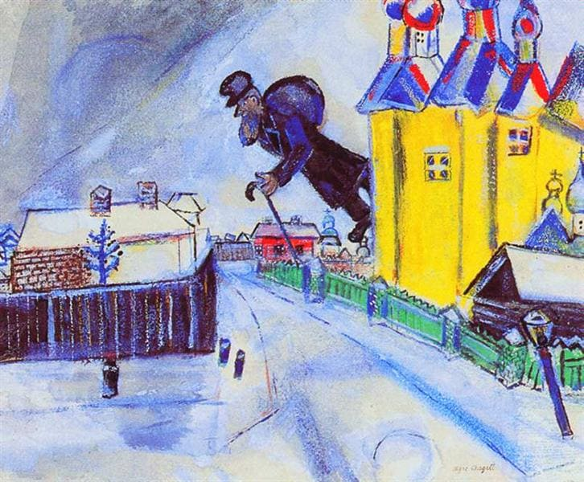
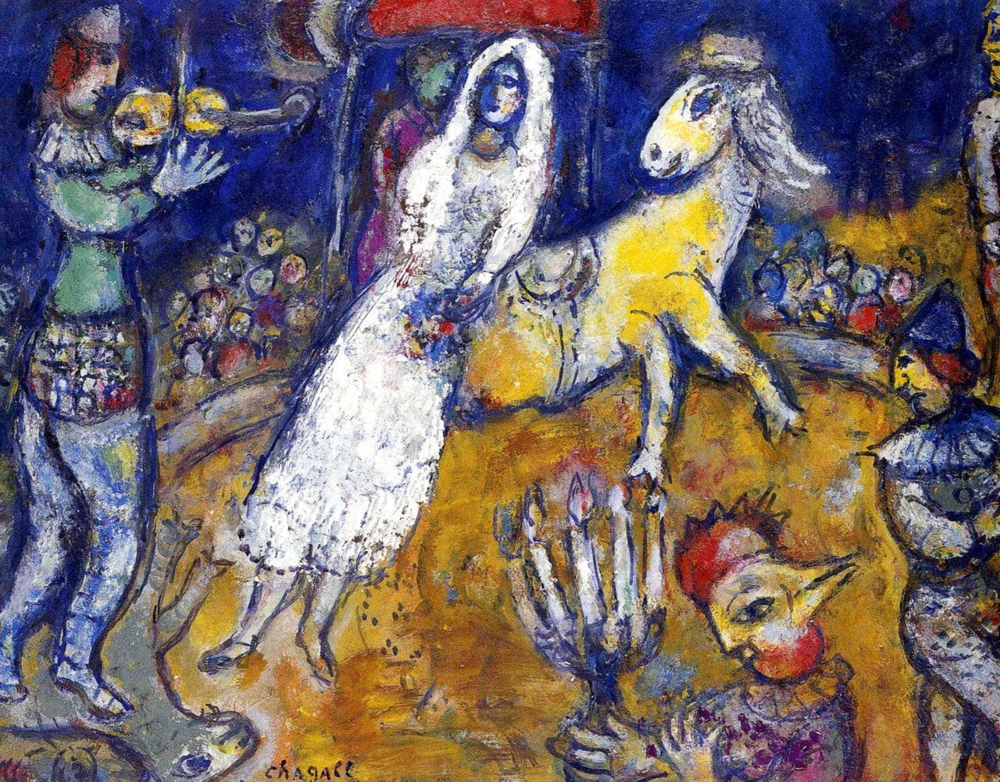
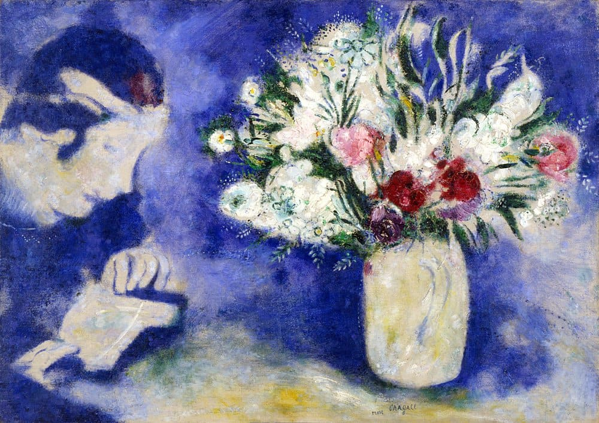
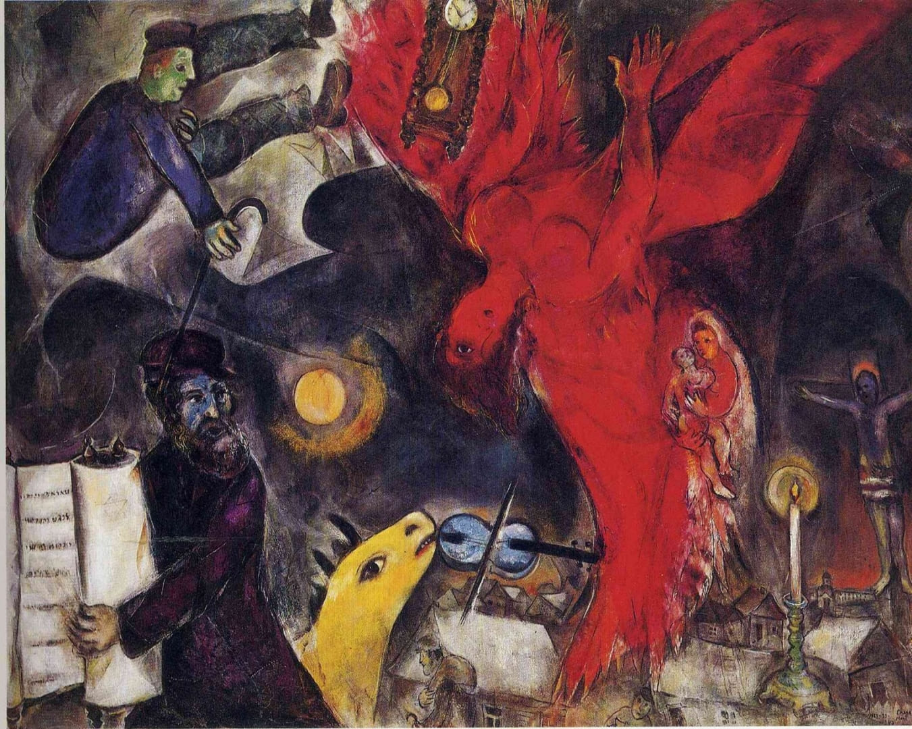
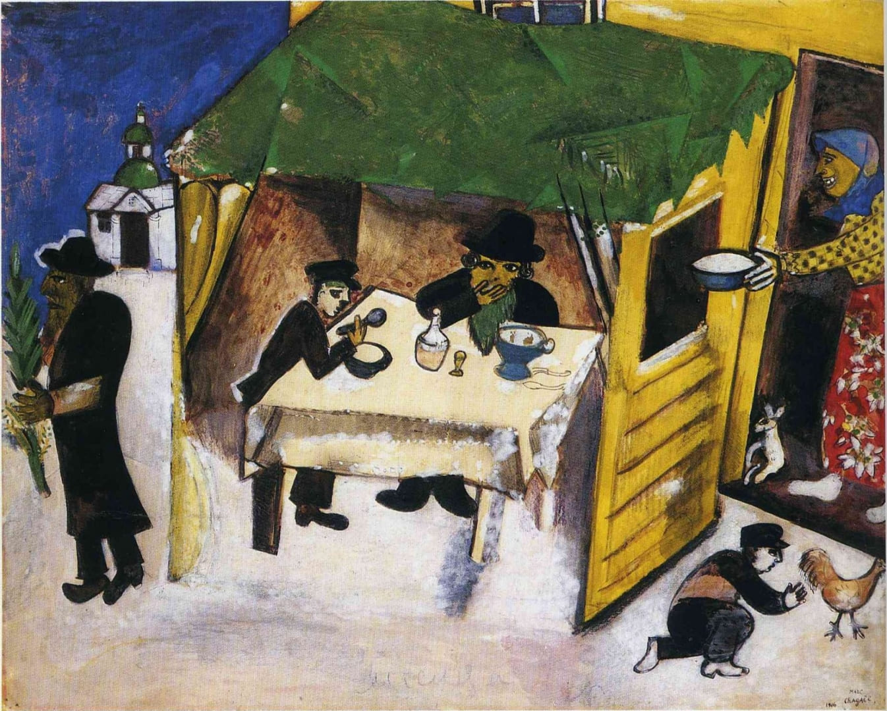
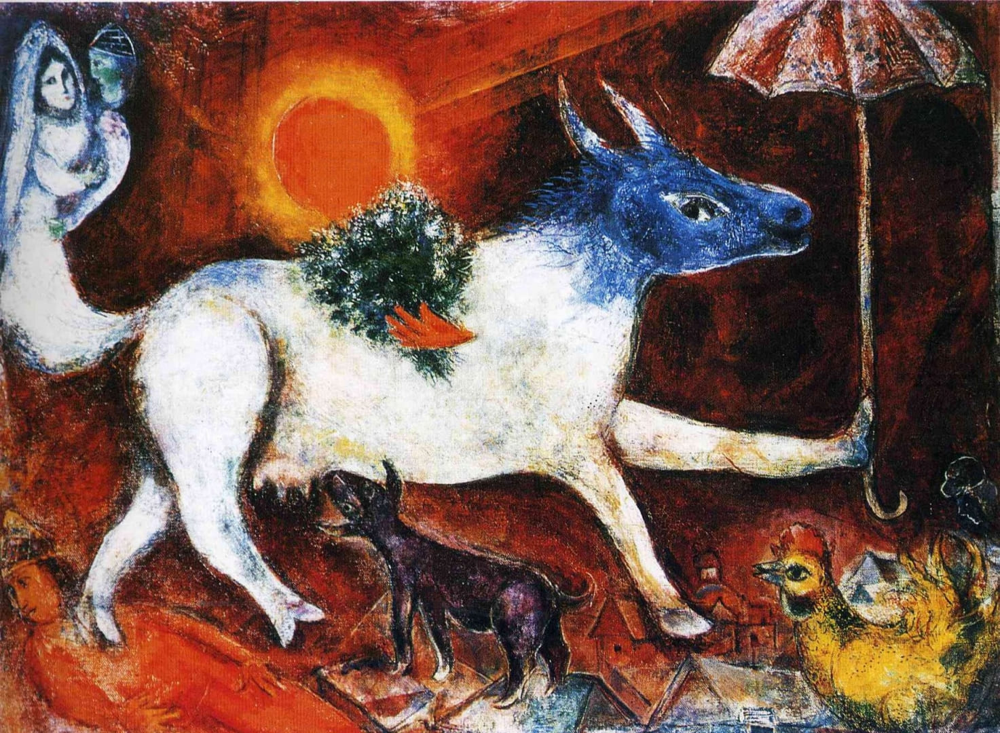
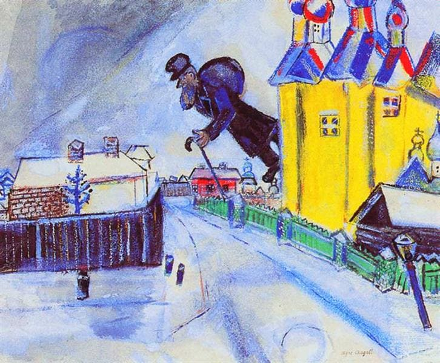
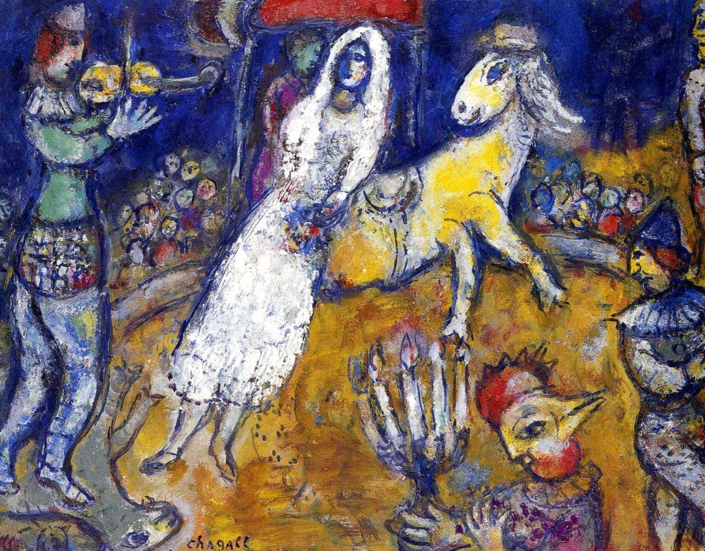
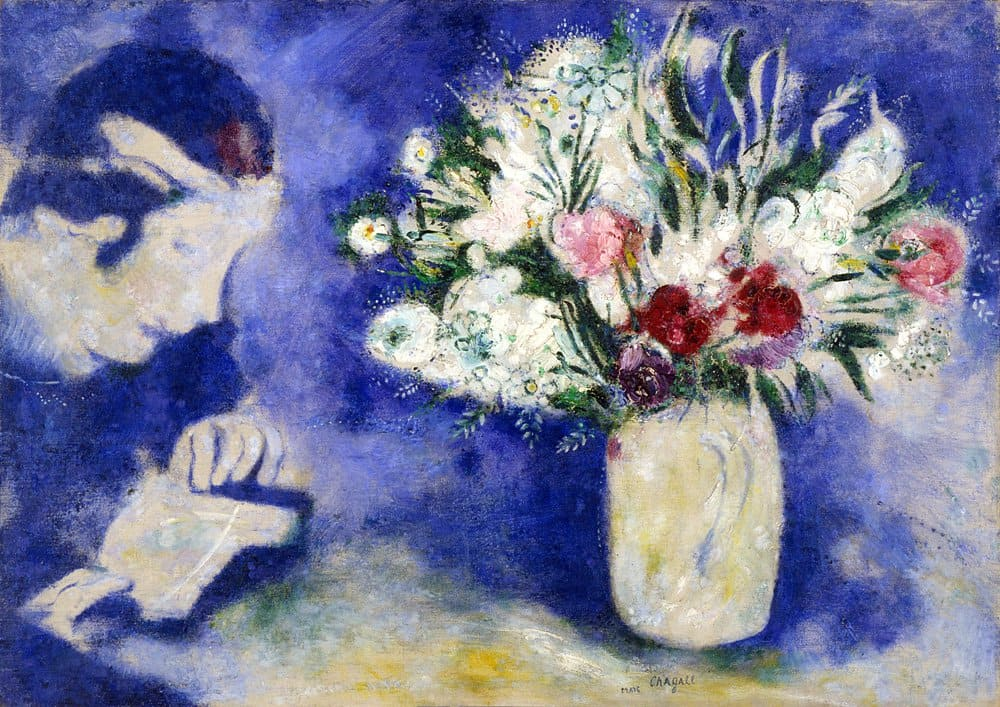
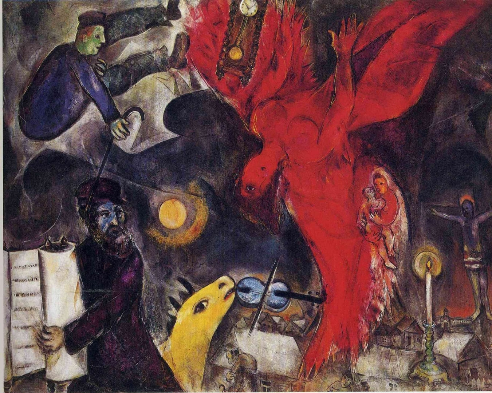
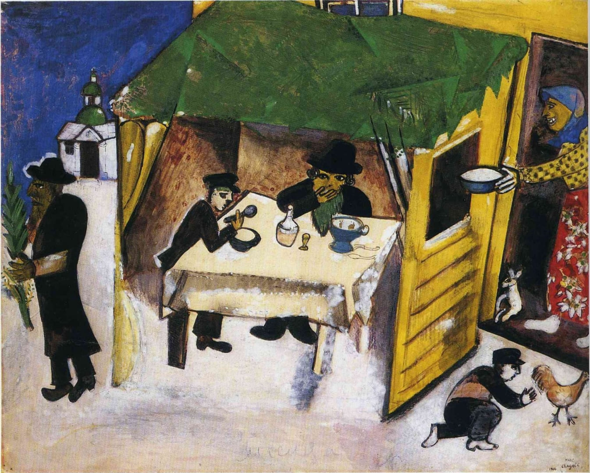
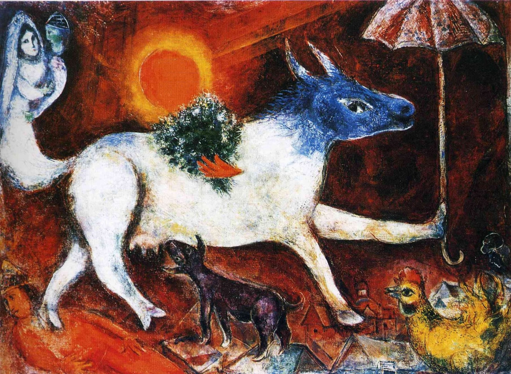